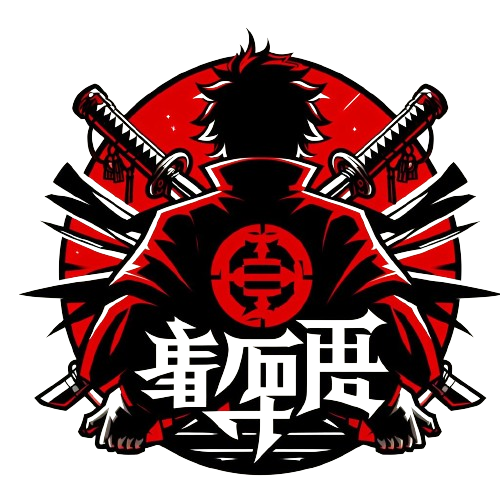

JJK RPG
JJK Chronicles: A Ascenção dos Feiticeiros
JJK: A Ascensão dos Feiticeiros é um RPG onde os jogadores exploram o mundo de "Jujutsu Kaisen" como feiticeiros, enfrentando maldições e protegendo a humanidade. Combinando habilidades únicas, batalhas estratégicas e dilemas morais, os jogadores vivenciam aventuras emocionantes e desafios épicos neste emocionante RPG baseado no popular anime e mangá